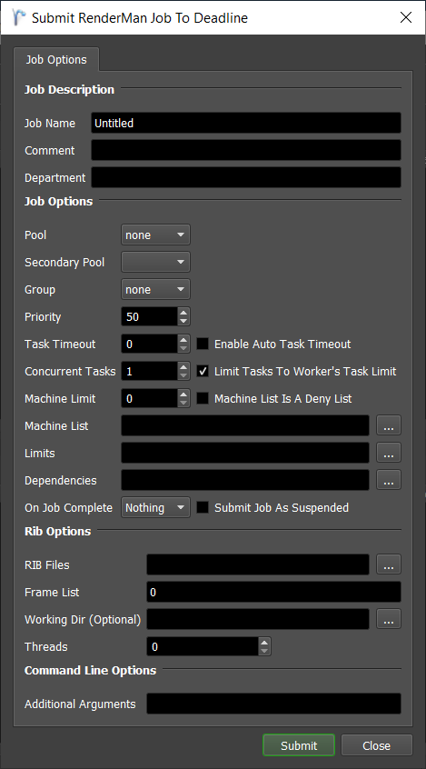
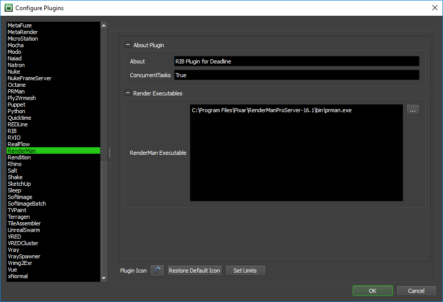

RenderMan (Pro Server)¶
Job Submission¶
You can submit RenderMan jobs from the Monitor or via an in-app submitter such as MayaBatch or Houdini as an export job.
Submission Options¶
The general Deadline options are explained in the Job Submission documentation, and the Draft/Integration options are explained in the Draft and Integration documentation. The RenderMan specific options are:
- RIB Files: The RIB files to be rendered (can be ASCII or binary formatted). These files should be network accessible.
Note
Since Deadline 10.1.19, if there are any digits representing the frame in the file path, we recommend replacing them with
<_FRAME%d_>, where%dis the optional padding size. All these tokens will be replaced by actual frames given in theFrame List. For example: use<_FRAME2_>instead of00,<_FRAME4_>instead of0000, or just<_FRAME_>if you don’t have any padding.
Working Directory: The working directory used during rendering. This is required if your RIB files contain relative paths.
Threads: The number of threads to use for rendering. Set to 0 to let RenderMan automatically determine the optimal thread count.
Additional Arguments: Specify additional command line arguments you would like to pass to the RenderMan renderer.
Plugin Configuration¶
You can configure the RenderMan plugin settings from the Monitor. While in power user mode, select Tools -> Configure Plugins and select the RenderMan plugin from the list on the left.
Note, if the executable supports a MAJOR.MINOR.REVISION (9.0.123) numbering system in its path, then you will need to configure the explicit exe path to the particular revision that you have installed on your machines. Deadline does not track every possible revision available or indeed where it might be custom installed to, so a studio should verify their exe paths are correct for each application version they choose to use with Deadline. Multiple exe paths can still be declared and the first one that is found on a particular Worker on a particular platform will be used from the exe list.
Render Executables
RenderMan Executable: The path to the RenderMan executable file used for rendering. Enter alternative paths on separate lines.
FAQ¶
Does RenderMan Standalone automatically generate .tex files for assets?
No. Unlike in Maya and Houdini, RenderMan Standalone does not provide a way to automatically generate .tex files for assets used within rib files and must be created manually prior to rendering.
Is RenderMan’s folder structure where each frame has its own folder supported by Deadline?
Yes. Deadline can render rib files that are in separate folders per frame, and can also render rib files that are all stored in the same folder.
Warning
This might not always work correctly in Deadline version 10.1.18 or less. Please see Incorrect frame substitution in scene file path in Error Messages and Meanings
Error Messages and Meanings¶
This is a collection of known RenderMan error messages and their meanings, as well as possible solutions. We want to keep this list as up to date as possible, so if you run into an error message that isn’t listed here, please contact Deadline Support and let us know.
Incorrect frame substitution in scene file path
A RenderMan Standalone job can error out with
Error starting "%RenderMan executable%" in "%directory%" : The directory name is invalid. Verify that%directory%from the error message is correct. If it’s not correct and the directory name consists only of digits, then it might have been considered to represent a frame number. For Deadline version 10.1.18 or less, rename the folder, so it contains at least one non-digit character.Similar to the above, the job can error out with
File %filename% cannot be opened by RiReadArchive. (System Error: No such file or directory). Verify that%filename%from the error message is correct. If it’s not correct and the filename contains any digits, then those digits might have been considered to represent a frame number. For Deadline version 10.1.18 or less, rename the file, so it doesn’t contain any digits or that the first digits in the filename represent the frame.Note
Since Deadline 10.1.19, if there are any digits representing the frame in the file path, we recommend replacing them with
<_FRAME%d_>, where%dis the optional padding size. All these tokens will be replaced by actual frames given in theFrame List. For example: use<_FRAME2_>instead of00,<_FRAME4_>instead of0000, or just<_FRAME_>if you don’t have any padding.

{kind=link}
{kind=link}